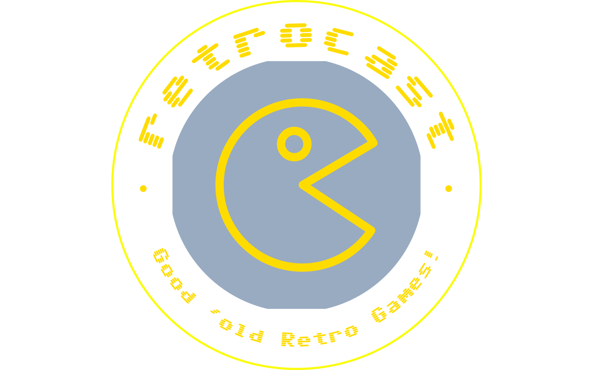

<nav class="navbar navbar-expand bg-info pb-2 sticky-top">
  <div class="container-fluid">
    
    <div class="collapse navbar-collapse">
      <ul class="navbar-nav me-auto mb-2 mb-lg-0 align-baseline">
        <li class="nav-item">
          <a
            class="nav-link"
            aria-current="page"
            routerLink="/"
            routerLinkActive="active"
            [routerLinkActiveOptions]="{ exact: true }"
            >Home</a
          >
        </li>
        <li *ngIf="!isLoggedIn">
          <a class="nav-link" routerLink="/login" routerLinkActive="active"
            >Accedi</a
          >
        </li>
        <li *ngIf="isLoggedIn">
          <a class="nav-link" routerLink="/library" routerLinkActive="active"
            >Libreria</a
          >
        </li>
        <li>
          <a class="nav-link" routerLink="/arcade" routerLinkActive="active"
            >Arcade <i class="bi bi-controller fs-5"></i></a
          >
        </li>
        <li *ngIf="isLoggedIn" class="nav-item">
          <button (click)="logout()" class="nav-link" routerLinkActive="active">
            Logout
          </button>
        </li>
      </ul>
    </div>
  </div>
</nav>
